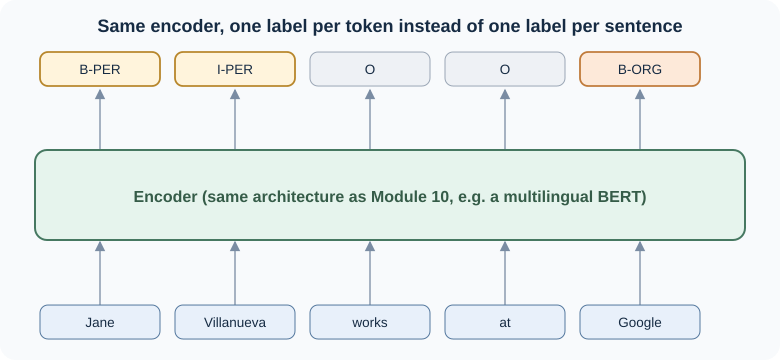

12.1 Multilingual Named Entity Recognition#
Search engines, company dashboards, and question-answering systems all need to know which words in a text are about something: a person, a company, a place. This reading asks:
How does a transformer find and label those words, and why does doing this across languages make the problem harder?
By the end of these notes you should be able to:
explain what a named entity is and why pulling them out of text is useful
name the common entity categories and tell NER apart from whole-document classification
label a short sentence with BIO tags and explain why NER is a token classification task
explain why multilingual NER is harder than monolingual NER, and what zero-shot cross-lingual transfer offers in response
compute entity-level precision, recall, and F1 for a tagged sentence
We will come back to one running example, the company name Amazon, through both this reading and 12.2: the same word that is easy to tag as an organization in English becomes genuinely ambiguous once other languages and other senses of the word enter the picture.
1. What Is a Named Entity?#
Note
Connecting the dots. You know: classifying a whole text, from Module 5 and Module 7. New problem: some tasks need an answer about one word or phrase inside a text, not about the text as a whole. Next: named entities, the most common example.
A named entity is, roughly, anything you could refer to with a proper name: a person, an organization, a location [JM26e]. Named entity recognition (NER) finds the spans of text that name something and labels what kind of thing they name. In the sentence
United Airlines said Tim Wagner, a spokesman, confirmed the change from Chicago to Denver.
an NER tagger would mark United Airlines as an organization, Tim Wagner as a person, and Chicago and Denver as locations.
NER matters because it is usually a first step, not a final answer. Once a system knows where the entities are, it can look up a company’s stock price, link a person’s name to their Wikipedia page, pull structured records out of free-text documents, or decide whose opinion a sentiment score belongs to. Most of the pipelines you have built so far in this course treated a whole document as one unit; NER is where the unit of interest shrinks to a span of a few words.
2. Entity Categories and a Different Kind of Task#
Note
Connecting the dots. You know: classifying a whole review as positive or negative. New problem: a single sentence can contain several different things worth labeling, each a different type. Next: the standard categories, and a term with a type problem of its own.
Four categories cover most NER work [JM26e]:
Tag |
Covers |
Example |
|---|---|---|
PER |
people, characters |
Turing is a giant of computer science. |
ORG |
companies, institutions, teams |
The IPCC warned about the cyclone. |
LOC |
regions, mountains, rivers |
Mount Sanitas is in Sunshine Canyon. |
GPE |
countries, cities, states (geo-political entities) |
Palo Alto is raising parking fees. |
Real systems often add domain-specific types (products, genes, works of art), and some tasks extend “entity” loosely to dates, times, and amounts of money. The legacy course materials for this reading used three tags, PER, LOC, and ORG; GPE is the current standard addition for places that are also political units, such as countries and cities.
NER differs from the classification you have done so far in one key way: classification in Module 5 and Module 7 assigns one label to a whole text. NER assigns a label to each relevant span inside the text, and most of the text (articles, prepositions, ordinary nouns) gets no entity label at all.
Entity type is not always obvious from the word alone. The name Washington can be a person, an organization, a location, or a geo-political entity depending on the sentence [JM26e]:
[PER Washington] was born into slavery on the farm of James Burroughs.
[ORG Washington] went up two games to one in the series.
Blair arrived in [LOC Washington] for what may be his last visit.
In June, [GPE Washington] passed a new law.
The model has to use the surrounding words, not the name by itself, to decide.
3. NER as Token Classification#
Note
Connecting the dots. You know: an encoder such as BERT turns each word into a contextual vector (Module 10). New problem: we need a label for a span, not a vector. Next: a tagging scheme that turns “find the spans” into “label each token,” plus the model that does it.
Because entities can be more than one word long, NER has a segmentation problem that whole-text classification does not: the model has to decide not just what a span is, but where it starts and ends. The standard solution is BIO tagging [JM26e]: every token gets a B- tag if it begins an entity, an I- tag if it continues one, and O if it is outside any entity. For the sentence Jane Villanueva works at Google:
Token |
Jane |
Villanueva |
works |
at |
|
|---|---|---|---|---|---|
Tag |
B-PER |
I-PER |
O |
O |
B-ORG |
With BIO tags, NER becomes a sequence labeling problem: assign one label to each token, the same shape as the part-of-speech tagging task it is often taught alongside. This is exactly what makes NER a good fit for an encoder-only transformer. Module 10’s table of “what to look for” already named this use: “find names of people, places, or products → an encoder fine-tuned for token classification.” The only change from the sentiment classifier you built in Week 10 is where the output comes from: instead of reading one summary vector ([CLS]) for the whole sentence, the model reads the output vector for every token and runs each one through a small classification head.


Fig. 37 Same encoder architecture as Module 10; one label per token instead of one label per sentence.#
Before transformers: HMMs and CRFs
NER used to be done with sequence models such as hidden Markov models and conditional random fields, trained on hand-designed features (capitalization, prefixes and suffixes, surrounding words) [JM26e]. A modern transformer does not need those features to be engineered by hand: its contextual vectors already encode most of that information from pretraining. The task (label every token with a BIO tag) has not changed; the model that does it has.
4. Why Multilingual NER Is Harder#
Note
Connecting the dots. You know: NER works by labeling contextual token vectors. New problem: “contextual” depends on a tokenizer and a training corpus, and both are language-specific by default. Next: what breaks when you move to another language, and why the usual fix is not “train a new model per language.”
Monolingual NER is already ambiguous, as the Washington example showed. Multilingual NER adds several more layers of difficulty:
Tokenization and script. A tokenizer trained mostly on English text may split names from other scripts (Cyrillic, Arabic, Han characters) into awkward, uninformative pieces, which makes it harder for the model to recognize a name as a single unit.
Morphology. Many languages attach case, number, or possession directly onto a name as a suffix or prefix, so the “same” entity can appear as several different surface forms in the training data.
Unequal data across languages. High-resource languages such as English, German, or Mandarin have abundant labeled NER data; most of the world’s languages do not. A model trained mainly on high-resource languages can look accurate overall while doing poorly on everything else.
Context-dependent, language-specific ambiguity. The Washington problem repeats in every language, often with different words: a name that is unambiguous in one language may collide with a common noun, a different entity type, or another name entirely in another.
Multilingual transformers and zero-shot transfer#
Rather than train a separate model per language, the usual approach is a multilingual transformer, pretrained on unlabeled text drawn from well over 100 languages at once, such as XLM-RoBERTa [CKG+20, TvWW22]. This uses the same pretraining idea from Module 10, just applied to a mixture of languages instead of one. The payoff is zero-shot cross-lingual transfer: fine-tune the model for NER using labeled data in one language, and it can often tag entities reasonably well in a language it never saw any NER labels for, because pretraining already gave it some shared sense of how languages work [TvWW22].
Zero-shot transfer is not free lunch. It tends to work best between related languages, and performance is still generally weaker on low-resource languages than on the high-resource language the model was fine-tuned on. For teams building multilingual products, this is a real engineering trade-off: ship one shared model with uneven quality across languages, or maintain several language-specific models with a higher maintenance cost.
5. Evaluating NER#
Note
Connecting the dots. You know: precision, recall, and F1 from Module 5’s spam filter. New problem: NER’s unit of interest is an entity span, not a single document. Next: the same metrics, counted a different way.
NER reuses precision, recall, and F1 exactly as defined in Module 5, with one change: the thing being counted as right or wrong is an entity, not a whole example [JM26e]. A predicted entity counts as correct only if both its boundaries and its type match the gold label. Tagging Jane as a person but missing Villanueva produces two errors at once (a false positive for the O that should have been I-PER, and a false negative for the entity Jane Villanueva as a whole), even though only one entity was involved.
Important
Because both the span and the type have to match, NER’s precision and recall are usually lower than token-level accuracy would suggest. A tagger that gets every individual token “mostly right” can still score poorly if it consistently gets entity boundaries one token off.
As in Module 5, you can report micro-averaged F1 (pooling all entities together) or macro-averaged F1 (averaging per entity type, so a rare type such as PER does not get drowned out by a common one such as LOC). For multilingual systems, it is worth going one step further and reporting F1 per language, for the same reason Module 11 reported word error rate per speaker group: an average across languages can hide a model that works well on the languages it was trained on and poorly on everything else.
6. Key Takeaways and Knowledge Check#
A named entity is something you could name with a proper noun; NER finds spans of text that name one and labels their type (commonly PER, ORG, LOC, GPE).
NER is a token classification task, not a whole-text classification task. BIO tags turn “find the spans” into “label every token,” which is exactly the shape an encoder-only transformer is good at.
Multilingual transformers, pretrained on many languages at once, enable zero-shot cross-lingual transfer: fine-tune on one language’s labels, apply to others. It works unevenly, usually best between related and higher-resource languages.
NER evaluation reuses precision, recall, and F1 from Module 5, counted per entity (boundaries and type both have to match), and is worth reporting per language for a multilingual system.
Check your interpretation#
In the sentence “Amazon reported strong quarterly earnings,” what entity type would you assign to Amazon? What would make you reconsider that label in a different sentence?
A tagger labels Villanueva as
B-PERbut missesJaneentirely in “Jane Villanueva works at Google.” How many errors does this produce under entity-level evaluation, and why is it not just one?Why is “train a monolingual NER model for every language we support” usually not the first approach a team reaches for?
A multilingual NER model was fine-tuned only on English and German data. Your team needs it to work on Swahili. What result would you expect, and what would you check before trusting it in production?
Suggested interpretation
In that sentence, Amazon is most naturally an organization (ORG). It could be reconsidered as a location in a sentence about the Amazon river or rainforest, which is exactly the kind of context-dependent ambiguity Section 2 and Section 4 describe, and which 12.2 picks back up in translation.
Two errors: a false negative for the entity Jane (missed entirely, should have been
B-PER) and a boundary error for Villanueva, which should have beenI-PER(continuing Jane’s name) but was instead tagged as if it were a new, one-word entity (B-PER). Entity-level evaluation counts the whole span, so a boundary slip costs you the entity, not just one token.It does not scale (most of the world’s languages have little or no labeled NER data), and it throws away what a multilingual model could share across related languages. Zero-shot or few-shot transfer from a multilingual model is usually the first thing to try, with monolingual fine-tuning reserved for languages where it still underperforms and labeled data can be found or created.
Expect noticeably weaker performance on Swahili than on English or German, especially for entity types or name forms not well represented in the pretraining data. Before trusting it in production, check F1 on a labeled Swahili sample specifically (not just the overall multilingual average), and look at the actual errors, not just the score, the way Module 10’s “check it on your own data” advice recommended for any pretrained model.
Next, Reading 12.2 picks the Amazon example back up: the same word that is an easy ORG tag in English becomes a genuine translation problem once you have to decide whether to translate it, transliterate it, or leave it alone.
References#
Main source for named entity definitions, categories, BIO tagging, and entity-level evaluation: [JM26e] (Chapter 18, “Sequence Labeling for Parts of Speech and Named Entities,” Sections 18.3 and 18.6). Multilingual transformers and zero-shot cross-lingual transfer: [TvWW22] (Chapter 4). XLM-RoBERTa: [CKG+20]. Token classification as an application of encoder-only transformers: see Module 10, Section 6.
Optional deeper reading: Tunstall, von Werra, and Wolf, Natural Language Processing with Transformers, Chapter 4, “Multilingual Named Entity Recognition,” walks through fine-tuning XLM-RoBERTa on the WikiANN/PAN-X dataset in code. That level of detail is not required for this course; it is the basis for a possible future coding-practice revision (see the instructor report for this task).